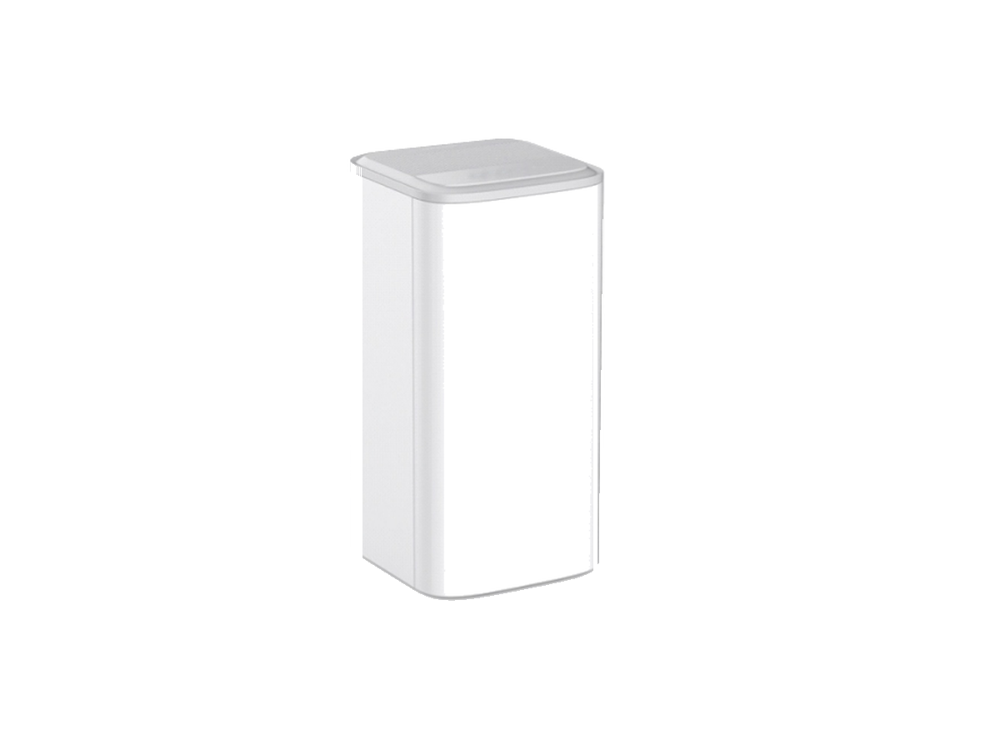

Untertisch
UntertischRP-U07
400–600-GPD-Untertisch-RO-Reiniger
SKU: RP-U07
MOQ: Auf Anfrage zu bestätigen
Startseite/Produkte/Untertisch-RO-Systeme/ RP-U01

Untertisch-RO-Systeme
Werkzeugloses Pull-out-Kartuschen-RO-System (M2)
RP-U01 — Werkzeugloses RO-System mit herausziehbarer Kartusche. Hauptspezifikation: RO-Leistungsoptionen 600 / 800 / 1000 GPD. Spezifikationen werden je Modell und Auftrag bestätigt. Außerdem ist eine weiße Variante mit Kupferbesatz (800–1400 GPD) sowie eine 400–800G-Variante verfügbar; siehe Varianten unten.
Spannung / Frequenz ist je nach Zielland konfigurierbar. Andere Konfigurationen werden pro Auftrag bestätigt.
RP-U01 ist ein Untertisch-RO-System, das auf werkzeuglosen Kartuschenwechsel ausgelegt ist: Die Kartuschen werden von vorne ohne Werkzeug herausgezogen, sodass ein Wechsel kein Werkzeug erfordert. Drei Leistungsbereiche decken 400 bis 1400 GPD in der ganzen Familie ab, und das Hauptmodell läuft mit 600 / 800 / 1000 GPD bei einem Reinwasserdurchfluss von 2,6 L/min. Das Hauptmodell hat ein Nenn-Reinwasservolumen von 4000 L, und eine 6-stufige Version ist verfügbar. Es richtet sich an Markeninhaber, die ein Untertisch-RO-System wollen, das nach dem Verkauf leicht zu handhaben ist.
Wie hoch ist die Mindestbestellmenge?
Die erste Bestellung beträgt 200 Stück pro Modell, Nachbestellungen 500 Stück.
Kann ich vor einer Großbestellung ein Muster bestellen?
Ja. Muster sind in 15 Tagen fertig, und die Mustergebühr wird bei Ihrer ersten Großbestellung erstattet. Großbestellungen dauern 40 Tage nach Musterfreigabe und werden FOB Shenzhen versandt.
Wie werden die Kartuschen gewechselt?
Durch werkzeuglosen Wechsel durch Herausziehen beim Hauptmodell; die RO-Kartusche wird am Ende ihrer Lebensdauer als komplette Einheit ersetzt. Die 400–800G-Variante nutzt den Filterwechsel per seitlichem Einsetzen.
Drei Varianten — als RP-U01 anfragen und die Variante angeben (dunkelgraues Hauptmodell, weiß mit Kupferbesatz oder 400–800G-Variante).
Bewegen Sie die Maus über ein Variantenbild, um die Spezifikationen zu sehen. Auf Touchscreens tippen Sie auf ein Bild.


Vollständige Spezifikationen jeder Variante, nebeneinander. Die Spezifikationstabelle weiter unten zeigt die Werte von RP-U01.
| Spezifikation | RP-U01-1 — dunkelgrau (M2) | RP-U01-2 — weiß, Kupferbesatz (M2403R) | RP-U01-3 — 400–800G-Variante (AM613R) |
|---|---|---|---|
| RO-Kapazität | 600 / 800 / 1000 GPD | 800–1400 GPD | 400 / 600 / 800 GPD |
| Kartuschen | 2: Vorfilter + RO | Je Auftrag bestätigt | 1: 4-in-1-Multifunktionsfilter |
| Kartuschenwechsel | Werkzeugloser Wechsel durch Herausziehen | Kartuschenwechsel per Frontentnahme | Filterwechsel per seitlichem Einschub |
| Filtration | Vorfilter aus plissierter Baumwolle + Aktivkohle + RO | PPC + RO | PP + C + RO + Nachkohle |
| Abmessungen | 386×146×334mm | Je Auftrag bestätigt | 180 × 246 × 436 mm |
| Nenn-Reinwasservolumen | 4000 L | Je Auftrag bestätigt | Je Auftrag bestätigt |
| Nennleistung | 100 W | Je Auftrag bestätigt | Je Auftrag bestätigt |
| Reinwasserdurchfluss | 2.6 L/min (anfänglich 3 L/min) | Je Auftrag bestätigt | Je Auftrag bestätigt |
| Spannung / Frequenz | An das Zielland anpassbar | An das Zielland anpassbar | An das Zielland anpassbar |
| Farbe | Dunkelgrau | Weiß mit Kupferakzenten | Weiß |
Die weiße Variante mit Kupferbesatz teilt das gleiche RO-Design mit Frontentnahme wie das Hauptmodell. Kartuschenanzahl, Abmessungen und Nenn-Reinwasservolumen werden je Auftrag bestätigt. Die 400–800G-Variante nutzt einen einzelnen multifunktionalen 4-in-1-Filter (PP + C + RO + Post-Carbon) mit Filterwechsel per seitlichem Einsetzen; ihr Nenn-Reinwasservolumen wird je Auftrag bestätigt.
12 Spezifikationszeilen aus dem ROPureOEM-Katalog.
| RO-Leistungsoptionen | 600 / 800 / 1000 GPD |
|---|---|
| Nenn-Gesamtreinwasservolumen | 4000 L |
| Kartuschen | 2: Vorfilter + RO |
| Vorfilter | Plissierte Baumwolle + Aktivkohle |
| RO-Kartusche | Ultraschallverschweißt als eine Einheit |
| Kartuschenservice | Werkzeugloser Wechsel durch Herausziehen; die komplette RO-Kartusche am Ende der Lebensdauer ersetzen |
| Filtrationsoption | 6-stufige Version verfügbar |
| Abmessungen | 386×146×334mm |
| Nennleistung | 100 W |
| Reinwasserdurchfluss | 2.6 L/min (anfänglich 3 L/min) |
| Spannung / Frequenz | An das Zielland anpassbar |
| Andere Konfigurationen | Je Auftrag bestätigt |
Die Spezifikationen stammen aus dem ROPureOEM-Katalog. Wenn ein Wert noch nicht bestätigt ist, wird er als „Je Auftrag bestätigt“ gelistet — wir veröffentlichen keine unbestätigten Zahlen.
Untertisch400–600-GPD-Untertisch-RO-Reiniger
SKU: RP-U07
MOQ: Auf Anfrage zu bestätigen
 Untertisch
UntertischUntertisch-RO mit Speicherheizung
SKU: RP-U08
MOQ: Auf Anfrage zu bestätigen
 Untertisch
UntertischLeistungsstarker RO-Reiniger mit Frontzugang
SKU: RP-U09
MOQ: Auf Anfrage zu bestätigen
 Untertisch
UntertischRO-Reiniger mit drei Kartuschen
SKU: RP-U11
MOQ: Auf Anfrage zu bestätigen